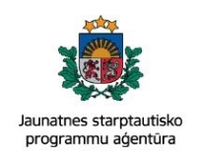
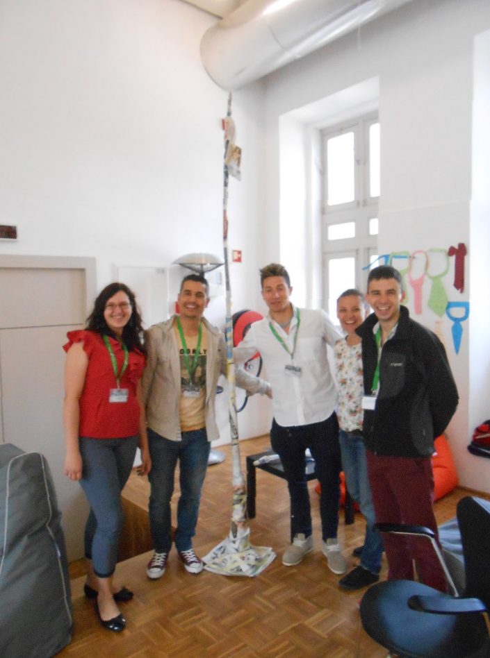
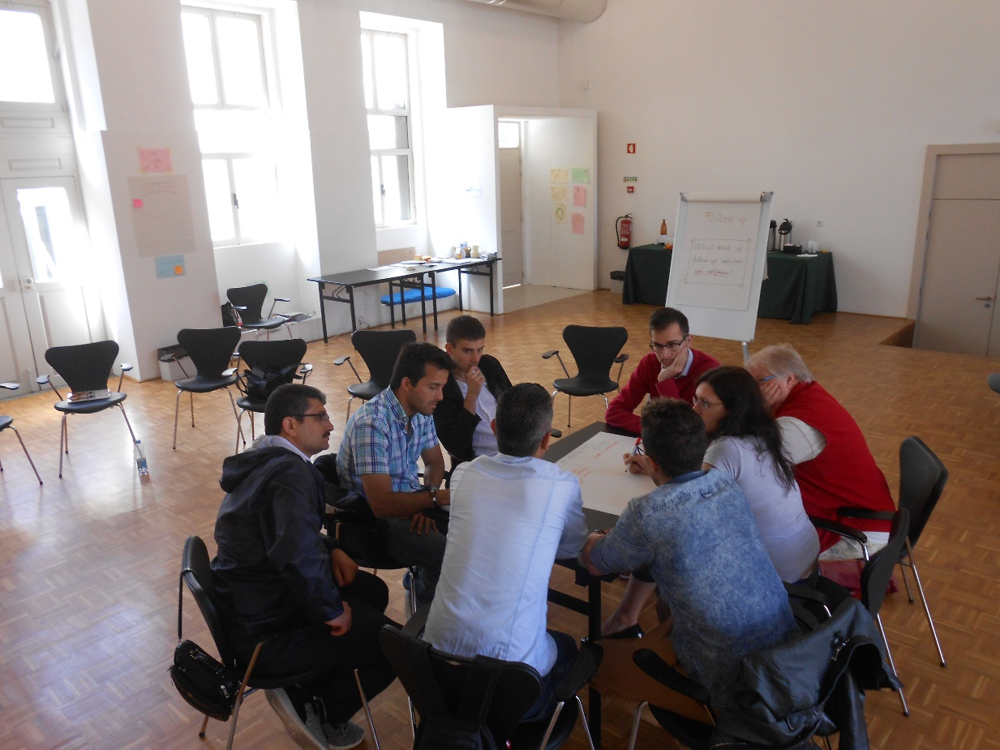
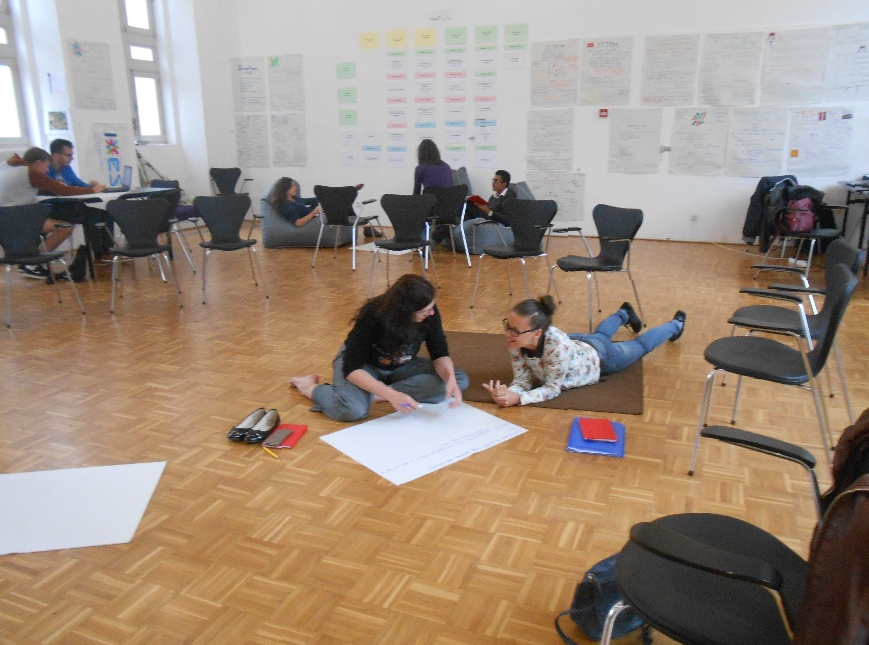
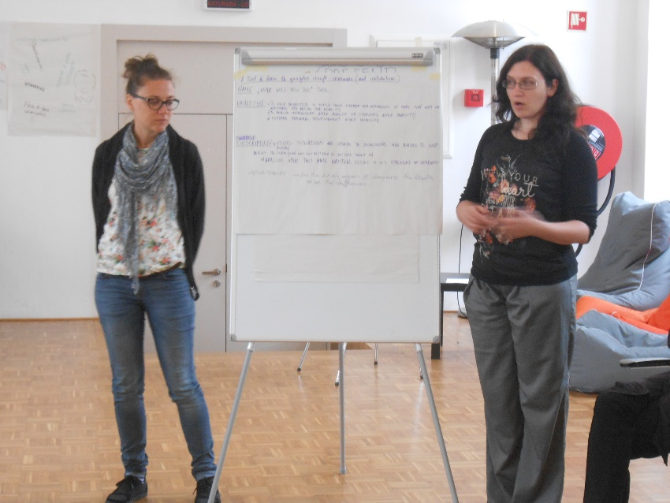
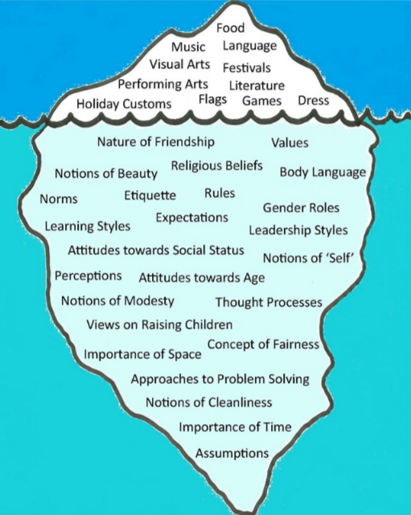

JAUNIEŠI ERASMUS+ PROGRAMMĀS
|  |
KAS IR «ERASMUS+: JAUNATNE DARBĪBĀ»?
«Erasmus+: Jaunatne darbībā» ir Eiropas Savienības programma, kas paredzēta 13 līdz 30 gadus veciem jauniešiem, kā arī jaunatnes darbiniekiem, tā ir balstīta uz neformālo izglītību.
Programma «Erasmus+» īstenošanas laiks ir no 2014.gada 1.janvāra līdz 2020.gada 31.decembrim.
Erasmus+ atbalsta trīs galvenos aktivitāšu tipus:
- Mācību mobilitātes indivīdiem, gan ES, gan ārpus ES
- Starpinstitucionālā sadarbība – sadarbības projekti starp izglītības iestādēm, jaunatnes organizācijām, uzņēmumiem, vietējām un reģionālajām autoritātēm un NVO
- Politikas izmaiņas ES valstīs un sadarbība ar ne ES valstīm
KUR MEKLĒT INFORMĀCIJU PAR «ERASMUS+: JAUNATNE DARBĪBĀ»?
- http://www.erasmus-plus.lv/lat/
- http://jaunatne.gov.lv/lv/erasmus/par-erasmus-jaunatnes-jomu
- http://viaa.gov.lv/lat/ek_izgl_programmas_iniciativas/erasmusplus/erasmus_plus_jaunumi/
- http://ec.europa.eu/programmes/erasmus-plus/sites/erasmusplus/files/files/resources/erasmus-plus-programme-guide_en.pdf
KAS IR «JAUNATNES STARPTAUTISKO PROGRAMMU AĢENTŪRA»?
Jaunatnes starptautisko programmu aģentūra ir Izglītības un zinātnes ministra pakļautībā esoša tiešās pārvaldes iestāde, kuras mērķis ir veicināt jauniešu aktivitāti un mobilitāti, līdzdalību jaunatnes brīvprātīgā darba, neformālās izglītības un jaunatnes informācijas programmās un projektos, kā arī veicināt jauniešu neformālo izglītību saistībā ar mūžizglītību.
Aģentūra sniedz jauniešiem iespējas rakstīt projektus, izplata jauniešiem interesantu un noderīgu informāciju par viņu iespējām Eiropā, veicina pieredzes apmaiņu un nodrošina konsultācijas par projektu rakstīšanu.
KUR ATRAST INFORMĀCIJU PAR «JAUNATNES STARPTAUTISKO PROGRAMMU AĢENTŪRU»?
YAM LEARNING JEB YOUNG PEOPLE’S LEARNING PROCESSES AFTER MOBILITY
Biedrības «Zaļais Meridiāns» sadarbošanās ar Portugāles biedrībām un veiksmīga un radoša piedalīšanās kopīgos projektos (piemēram, "Cinema research" 10-20.09.2015 Azores, Sant Miguel island Portugal; DON'T BE A CLOWN BUT LEARN FROM THE CLOWN 20.01 - 31.01.2016 Lisbon, Sant Miguel island Portugal) ir sniegusi Latvijas jauniešiem iespēju saņemt uzaicinājumus piedalīties starptautiskos projektos un mācībās. Pēdējā no šādām iespējām bija piedalīšanās apmācību kursā «YAM learning», kurš norisinājās Portugālē, Bragā no 2016.gada 17. līdz 22.maijam.
Apmācības notika neformālā veidā: diskusijas, grupu darbs, darbs pāros un, protams, individuālais darbs (piem., sevis analīze jeb SWOT analīze)
|  |  |
|  |  |
YAM Learning programma ietvēra sevī vairākus mērķus:
- Dalīties ar veiksmīgu pieredzi jaunatnes darbinieku starpā
- Uzlabot informācijas izplatīšanas aktivitāšu kvalitāti
- Atpazīt metodes un instrumentus, kurus izmanto, lai izvērtētu starptautiskās mobilitātes pieredzes ietekmi
- Atvieglot jaunatnes darbinieku, jaunatnes līderu un vadītāju kā atbalstītāju atpazīstamību jauniešu mācību procesos pēc atgriešanās
- Palīdzēt jauniešiem saprast, kā darboties ar prasmēm, ko ir ieguvuši mobilitātes procesos
- Atpazīt starpkulturālos izaicinājumus mācību pieredzē ārzemēs
- Saprast mobilitātes pieredzes projektu ciklu (kas notiek pirms, projekta laikā un pēc tam)
- Saprast un apspriest jaunatnes mācību procesus piedaloties mobilitātes projektos.
DARBS AR MOBILITĀTES PROGRAMMU DALĪBNIEKIEM
|
Pirms mobilitātes programmas:
|
Mobilitātes programmas laikā:
Pēc mobilitātes programmas:
|
Atslēgas vārdi: ZINĀŠANAS – PRASMES - ATTIEKSME
IZAICINĀJUMI
KULTŪRŠOKS
ICEBERG CONCEPT OF THE CULTURE
«ATGRIEŠANĀS ŠOKS»
TURPINĀM…
Jau šī gada 12.jūnijā dodamies nākamajā piedzīvojumā – tieši šādi var apzīmēt gan mācības, gan jauniešu apmaiņas programmas Erasmus+ ietvaros. Šoreiz mūsu ceļš vedīs uz Rumānijas pilsētu Bušteni, kur piedalīsimies projektā «Ready. Steady. Go» jeb “ Ready to learn , steady to understand , Go for a job “ Tā ir mūsu iespēja ne tikai parādīt citām valstīm Latviju, iepazīstināt ar mūsu kultūru, pavadīt jautri laiku un iegūt jaunus draugus, bet arī piedalīties sociāli svarīgu jautājumu risināšanā (šajā projektā - bezdarbs jauniešu vidū).